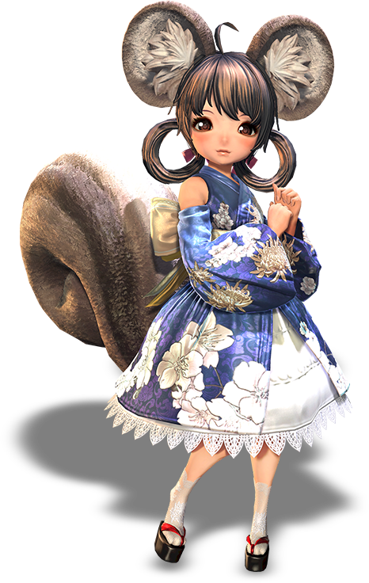

Tương truyền, Phượng Hoàng, sinh vật huyền thoại của văn hóa Phương Đông đã truyền lại sự
thanh lịch và duyên dáng của mình cho những người nối dõi. Do đó, Thiên Tộc với khiếu thẩm mỹ bẩm sinh
chính là những người thợ tinh tế nhất trong thế giới Blade and Soul.
Các chủng tộc khác luôn ngưỡng mộ sự
khéo léo và sáng tạo của Thiên Tộc cũng như cách họ mang đến vẻ đẹp tuyệt mỹ trong tất cả mọi thứ họ tạo ra.
Thiên Tộc cũng can thiệp nhiều vào xã hội hiện đại nhằm mang đến sự cân bằng cho toàn thế giới.
Thiên tộc đề cao phẩm giá và lòng tự trọng, nhưng họ cũng không hề thua kém các chủng tộc khác ở kỹ năng chiến đấu.
Dù vậy, bên cạnh các trận chiến, họ cũng sử dụng nhiều thời gian cho việc thiền và giảng đạo với những chủng tộc khác.

Linh tộc là hậu duệ của loài thần thú Kỳ Lân, với tai và đuôi dài, cùng tính cách tinh nghịch khó nắm bắt.
Linh tộc có những giác quan bẩm sinh cực kì nhanh nhạy, giúp họ tránh xa những nguy hiểm và cho phép họ thấy được
sự phản bội hay lừa dối mà người khác không thể đoán biết. Linh tộc có thể sử dụng những giác quan của mình
để liên lạc với những thực thể từ Ma Giới, cho phép họ kết nối với Linh Thú và sử dụng sức mạnh của trời đất.
Linh tộc được biết tới với bản chất tự nhiên khó đoán của họ. Chỉ trong một cuộc đối thoại, không lạ khi một Linh nhân
có thể biểu hiện nhiều sắc thái cảm xúc, từ giận dữ, sợ hãi, ghen tị, yêu thương cho tới kính phục.